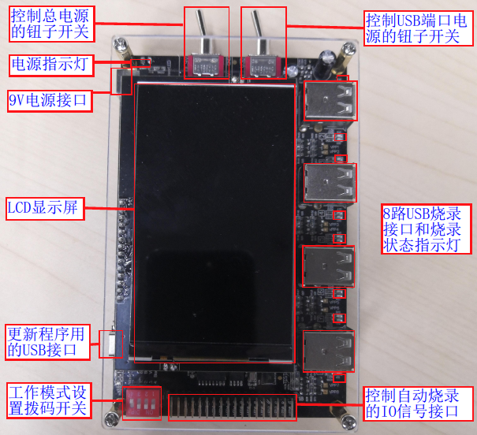
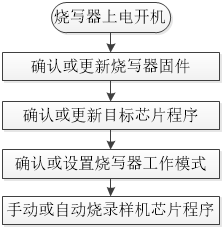

2.1. 烧录器简要介绍
2.1.1. 功能描述
杰理科技一拖八烧录器（通常也叫烧写器，编程器）主要用于离线烧录（烧录过程不需连接PC计算机）已贴片的样机芯片程序。
支持开发过程使用一台烧录器对1~8个样机芯片进行程序烧录，量产配合烧录治具实现对N台烧录器的N*8个样机芯片同时进行手动或者自动烧录程序。
一拖八烧录器主要有以下功能：
程序烧录（支持烧录内置/外置flash，支持带电池烧录升级）
程序校验
芯片查空
授权烧录次数限制
蓝牙地址自增
认证码等第三方数据烧录
自定义资源文件烧录
芯片性能测试
频偏校准、MIC测试
特殊功能定制
Important
烧录器功能和各个功能相关配置的详细使用说明请参考对应章节内容！！！
2.1.2. 烧录器清单
编号 |
模块类型 |
包含部分 |
说明 |
|---|---|---|---|
1 |
烧录器主机 |
主控板部分 |
用于控制烧录器工作 |
9V电源供电口 |
烧录器总电源供电端口 |
||
电源指示灯 |
供电并打开总电源开关后亮灯 |
||
控制总电源的钮子开关 |
控制总电源开启与关闭 |
||
控制USB端口电源的钮子开关 |
控制USB端口电源的开启与关闭 |
||
模式设置拨码开关 |
用于设置烧录、校验、 |
||
USB烧录端口电压设置拨码开关 |
用于设置USB烧录端口输出电压 |
||
更新程序用的USB接口 |
用于升级烧录器固件程序和 |
||
8路USB烧录接口 |
8个烧录通道，用于烧录器与样机芯 |
||
8路自动烧录控制接口 |
机台可通过IO信号控制样机芯片 |
||
8路烧录状态指示灯 |
指示各个通道的烧录状态 |
||
LCD显示屏 |
显示烧录信息、烧录状态， |
||
散热风扇 |
主控散热（V2.0硬件版本烧录器） |
||
电位计 |
调节电流测试模块的基准源 |
||
2 |
USB数据线 |
用于烧录器和PC电脑连接， |
|
3 |
电源适配器 |
请使用9.0V、2.0A以上规格电源 |
2.1.3. 烧录器主机介绍
2.1.3.1. 不同版本烧录器差异
本文档以常用的V1.2硬件版本烧录器和V2.0硬件版本烧录器进行介绍，这两个不同的硬件版本的烧录器基本功能一致，主要差异如下：
硬件版本 |
差异说明 |
|---|---|
V1.2 |
USB烧录端口输出电压由拨码开关设置，支持4.2V,5.0V 电压档位设置 |
更新程序用的USB接口使用的是USB micro接口 |
|
V2.0 |
USB烧录端口输出电压由PC端配置 |
更新程序用的USB接口使用的是USB TYPE-C接口、USB母头 |
|
增加机台自动烧录控制接口 |
|
增加了主控散热风扇，修改了部分硬件模块 |
2.1.3.2. V1.2硬件版本烧录器
V1.2硬件版本烧录器主机正面如V1.2版本烧录器主机正面所示。

V1.2版本烧录器主机正面
V1.2硬件版本烧录器主机背面如V1.2版本烧录器主机背面所示。

V1.2版本烧录器主机背面
2.1.3.3. V2.0硬件版本烧录器
V2.0硬件版本烧录器主机正面如V2.0版本烧录器主机正面所示。

V2.0版本烧录器主机正面
V2.0硬件版本烧录器主机背面如V2.0 版本烧录器主机背面所示。

V2.0 版本烧录器主机背面
2.1.4. 样机烧录接线说明
2.1.4.1. 样机芯片烧录接线
样机芯片烧录需要用到的引脚有VBAT,DM,DP,GND,这些引脚焊接通信线（量产时样机预留这些引脚的烧录点，通过治具探针接触这些引脚）连接到对应的USB公头上，插入一拖八烧录器USB母头烧录接口，即可实现样机芯片程序的烧录。 如样机芯片烧录接线和样机预留接触点用于量产烧录所示。

样机芯片烧录接线

样机预留接触点用于量产烧录
2.1.4.2. demo板和上层板烧录接线
demo板也是一台样机，一般引有USB接口出来，只要用USB线进行demo板和烧录USB接口连接，即可实现芯片程序的烧录。
当有通过一拖八烧录器烧录裸片的需求时，可通过带有socket座对应芯片的demo板子进行烧录，也可用芯片对应的一拖二烧录器的上层板进行烧录。通过上层板烧录的接线方法如上层板烧录接线所示。

上层板烧录接线
2.1.4.3. 部分样机芯片烧录特殊接线

2.1.5. 烧录器使用流程说明
烧录器使用流程
烧录器使用流程大致如烧录器使用流程图所示。

烧录器使用流程图
使用流程说明
以下通过表格的方式，对使用流程进行介绍说明。
使用流程
说明
烧录器上电开机
烧录器出货前已经烧录有烧录器固件程序，
拿到烧录器后即可上电开机确认或更新烧录器固件
烧录器固件指控制整个烧录器工作的主控芯片固件程序，
烧录目标芯片程序前务必确认当前烧录器固件版本是否是最新，
不是最新请通过远程升级方式更新最新版本
烧录器固件程序（特殊情况除外），
否则可能出现一些烧录问题。确认或更新目标芯片程序
目标芯片程序指fw文件，ufw文件，key文件；
需把文件更新到烧录器存起来，烧录时才能把对应数据烧录到
目标芯片，或实现校验和查空功能；
更新目标芯片程序时还需对烧录配置项进行配置，
实现资源烧录、芯片性能测试等功能确认或设置烧录器工作模式
工作模式指烧录、校验、查空，电流测试等工作模式；
务必确认好烧录器当前的工作模式，以防出现一些烧录问题手动或自动烧录样机芯片程序
手动烧录指通过手动拔插样机，或过治具按压接触样机的方式进行
烧录方式；自动烧录指通过自动烧录机台控制样机芯片烧录
2.1.6. 名词解释
烧录器：又称烧写器，编程器。用于向可编程集成电路（如单片机，存储器flash,otp等）写入数据的工具。杰理相关文档，工具界面，显示屏等看到
烧录，烧写都是同一个意思。
空片：指出厂后没有经过烧录的芯片，通常指芯片的flash，硬件存储介质等为空数据状态！
烧录器固件：用于控制整个烧录器工作的烧录器固件程序。
目标芯片程序：指sdk（软件开发工具包）编译生产的fw文件，ufw文件等可执行文件，可以通过烧录器烧录到芯片运行，控制整个产品工作。
离线烧录：不需要使用PC电脑进行烧录。一拖八烧录器是先通过PC电脑把目标芯片程序部署到烧录器存储器存储起来，再实现离线烧录芯片。
fw文件：指目标芯片可执行程序，常用于烧录空片
ufw文件：指目标芯片可执行程序，主要用于对可以运行的样机芯片执行程序的二次更新升级，如使用测试盒，SD卡，U盘升级等。也支持通过烧录器进行升级。
key文件: 为一个秘钥文件，下载目录download.bat配置key文件后实现对生成的fw/ufw文件数据的加密，烧录fw/ufw文件数据时，key文件数据会被烧录到芯片硬件存储介质，芯片运行时通过硬件解密程序数据实现程序运行！客户烧录器key文件具有唯一性，每个客户都各自有属于自己的key文件，fw文件的key文件与烧录器的key文件一致才能烧录！只有量产烧录器支持烧录key文件！支持单独烧录key文件后再通过其他烧录工具烧带key文件的fw文件！